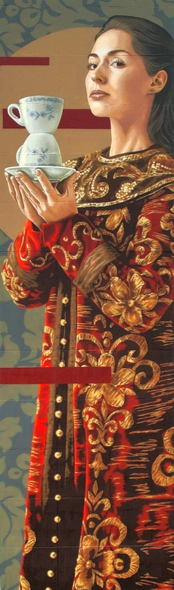
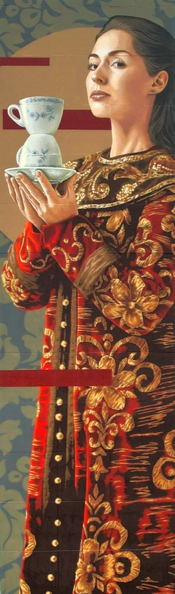

Железнодорожный
Железнодорожный
Муралы на карте
В подмосковной Балашихе завершился Международный фестиваль стрит-арта «Культурный код» – проект Фонда поддержки и развития современного искусства и президентской платформы «Россия – страна возможностей».
60 художников из десяти стран создали более 40 муралов в районе Железнодорожный. Уникальные произведения от авторов из России, Израиля, Испании, Италии, Сербии, Аргентины, Бразилии, Колумбии, Мексики, Индонезии и Казахстана украсили фасады жилых домов и других объектов города.
Галереи муралов появились на улицах Луговой, Новой, Колхозной, Пионерской, Пушкина, и Московской.
Огромные картины высотой с многоэтажные дома представляют собой новый музей монументального искусства под открытым небом.
Наш проект посвящен муралам в городе Железнодорож-ном. Благодаря нашему сайту вы с легкостью сможете отследить местонахождение арт-объектов, изучить фотогра-фии, узнать подробнее о произведении и его творце.


 
